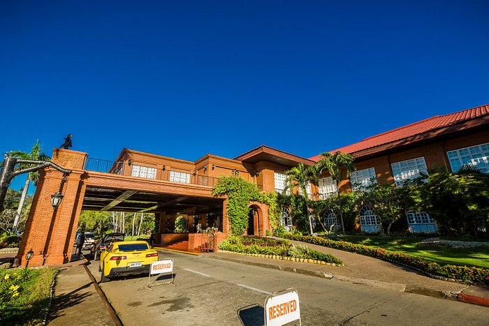

HOME
PAGUDPUD, ILOCOS NORTE
LAOAG, CITY ILOCOS NORTE
PAOAY, ILOCOS NORTE
BATAC CITY ILOCOS NORTE

Laoag City is the capital of the province of Ilocos Norte. Its name is said to come from an Ilocano term, "lawag" which means light or brightness. The city is also popularly known as the "Sunshine City" that has clear atmosphere with beautiful, blue skyline.
As of 2020, Laoag City has a total population of 111,651. The local government of Laoag is led by Mayor Michael Marcos Keon and Vice Mayor CarlosFarinas.
The city is a vibrant and dynamic growth center in the north, a truly unique destination offering surprises, panoramic sand dunes, lush vegetation, scenic beaches, high land lures, historical and heritage sites.
It is the business and trading center of Ilocos Norte, boasting numerous diversified business activities and establishments. Hotels, restaurants, bars, banks and other establishments are located in the central business district. Of particular interest is the Laoag City Commercial Complex, where establishments offer Ilocano products such as Inabel, Bagnet, Longganisa, Sukang Iloko and other Ilocano products.